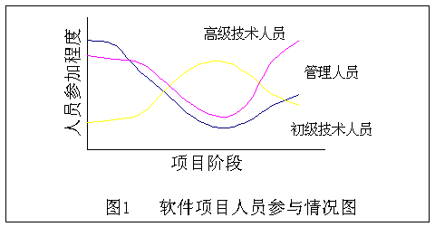

软件管理 1.概述 同其他任何工程项目一样，软件项目同样存在一个非常重要的问题，这就是软件管理的问题，而这一问题通常容易被一般的软件开发人员所忽视。在一般的软件工程资料中所讨论的重点也只是软件开发方法，对软件管理问题大多一笔带过。在一个小的软件开发项目中也许还无所谓，但一个大型的软件开发项目如果没有优秀的软件管理人员来领导和协调整个项目，其失败的可能性就很大了。因此有必要引起大家对此问题的重视，这也是本文的目的所在。 软件管理工作涉及到软件开发工作的方方面面，其直接对象包括人、财、物，简单地说，人就是指软件开发人员，财就是指项目经费，物就是指软件项目。也许还没有关于这方面的专门理论，但在工商管理领域已经有十分成熟的管理学理论，他山之石，可以攻玉，所以我们完全可以引进到软件项目方面的管理。本文就主要谈谈管理学理论在软件管理方面的应用。 作为软件管理人员，应该站在高处来俯瞰整个项目，如果有不识庐山真面目的感觉就不太好了。有了俯瞰全局的意识这一前提，采用适当的管理技术，项目开展就容易罗。软件项目的管理工作可以分位四个方面：软件项目的计划、软件项目的组织、软件项目的领导和软件项目的控制，下面对这四个方面进行详细的介绍。 2.软件项目的计划 软件开发项目的计划包括定义项目的目标，以及达到目标的方法。他涉及到项目实施的各个环节，带有全局的性质，是战略性的。计划应力求完备，要考虑到一些未知因素和不确定因素，考虑到可能的修改。计划应力求准确，尽可能提高所依据的数据的可靠程度。主要工作集中在软件项目的估算、软件开发成本的估算和软件项目进度安排。软件项目计划的目标是提供一个能使项目管理人员对资源、成本和进度做出合理估算的框架。这些估算应在软件项目开始时的一段有限时间内作出，并随着项目的进展进行更新。 软件项目的估算 软件项目管理过程开始于项目的计划，在做项目计划时，第一项活动是估算。现在已经使用的使用技术是时间和工作量的估算。因为估算是其他项目计划活动的基石，而且项目计划又未软件工程过程提供了工作方向，所以我们不能没有计划就着手开发，否则就会陷入盲目性。 估算本身带有风险，估算资源、成本和项目进度时需要经验、有用的历史信息、足够的定量数据和作定量度量的勇气。估算的精确程度受到多方面的影响。首先，项目的复杂性对于增加软件计划的不确定性影响很大，复杂性越高，估算的风险就越高。复杂性是相对度量的，他与项目参加人员的经验有关，比如如果让搞MIS的项目组去搞操作系统设计显然增加了复杂性。其次，项目的规模对于估算的精确性和功效的影响也比较大，因为随着软件规模的扩大，软件相同元素之间的相互依赖、相互影响也迅速增加，因而估算时进行问题分解也会变得更加困难。还有项目的结构化程度也影响项目估算的风险，这里的结构性是指功能分解的简便性和处理信息的层次性，结构化 程度提高，进行精确估算的能力就提高，相应风险将减少。此外，历史信息的有效性也影响估算的风险，在对过去的项目进行这综合的软件度量之后，就可以借用来比较准确地进行估算。影响估算的因素远不止这些，比如用户需求的频繁变更给估算带来非常大的影响。 估算的依据是软件的范围，包括功能，性能、限制、接口和可靠性。在估算开始之前，应对软件的功能进行评价，并对其进行适当的细化以便提供更详细的细节。由于成本和进度的估算都与功能有关，因此常常采用功能分解的办法。性能的考虑主要包括处理和响应时间的需求。约束条件则标识外部硬件、可用存储和其他现有系统对软件的限制。 另外软件项目计划还要完成资源估算，包括人力资源、硬件资源和软件资源。在考虑各种软件开发资源时最重要的是人，必须考虑人员的技术水平、专业、人数以及在开发过程各阶段对各种人员的需要。硬件资源作为一种工具投入。软件资源包括各种帮助开发的软件工具，比如编程工具、管理工具、测试工具，还有操作系统和数据库等。 工作两估算是最普遍使用的技术。经过功能分解之后，可以估计出每一个项目任务的分解都需要花费若干人年，总计之后就知道软件项目总体工作量。下面就是一个示意性工作量估算表。 表格 1 某软件系统工作量估算表（单位：人日）
软件开发成本的估算 软件开发成本主要是指软件开发过程所花费的工作量及其相应的代价。它不同于其他物理产品的成本，它主要包括人的劳动的消耗，人的劳动的消耗所需的代价就是软件产品的开发成本。 开发成本的估算方法有很多种，象简单的代码行技术，任务分解技术，自动估计成本技术，专家判定技术，还有参数方程法，标准值法，以及COCOMO模型法。其中COCOMO (Constructive Cost Model)模型法是一种精确、易于使用的成本估算方法，该模型按其详细程度分为三级：基本COCOMO模型、中间COCOMO模型和详细COCOMO模型[3]。 软件项目进度安排 软件项目的进度安排主要是考虑软件交付用户使用的这一段开发时间的安排。进度安排的准确程度可能比成本估计的准确程度更重要。软件产品可以靠重新定价或者靠大量的销售来弥补成本的增加，但进度安排的落空会导致市场机会的丧失或者用户不满意，而且也会导致成本的增加。因此在考虑进度安排时要把人员的工作量与花费的时间联系起来，合理分配工作量，利用进度安排的有效分析方法严密监视软件开发的进展情况，以使得软件开发的进度不致被拖延。 在进行进度安排时要考虑的一个主要问题是任务的并行性问题。当参加项目的人数不止一人是软件开发工作就会出现并行情况。因为并行任务是同时发生的所以进度计划表必须决定任务之间的从属关系，确定各个任务的先后次序和衔接，确定各个任务完成的持续时间。另外还应注意关键路径的任务，这样可以确定在进度安排中应保证的重点。常用的进度安排方法有两种，即甘特图（Gantt Chart）法和工程网络法。 3.软件项目的组织 参加软件开发的人员如何组织起来，使他们发挥最大的工作效率，对成功地完成软件项目极为重要。 组织结构 开发组织采用什么形式由软件项目的特点决定，同时也与参加人员的素质有关。通常有三种组织结构模式：
组织结构的最后一层是程序设计小组的组织形式。通常认为程序设计工作是按独立的方式进行的，程序人员独立地完成任务。但这并不意味着相互之间没有联系。一般在人数比较少时组员之间的联系比较简单，但随着人数的增加，相互之间的联系变得负责起来。小组内部人员的组织形式对对生产率有着十分重要的影响。 常见的小组组织形式有三种，这三种形式可以灵活使用。
人员配备 合理地配备人员是成功地完成软件项目的切实保证。所谓合理地配备人员应包括按不同阶段适时运用人员，恰当掌握用人标准。一般来说，软件项目不同阶段不同层次技术人员的参与情况是不一样的。下图是典型的软件开发人员参与情况曲线。  在人力配备问题上，由于配置不当，很容易造成人力资源的浪费，并延误工期。特别是采用恒定人员配备方案时在项目的开始和最后都会出现人力过剩，而在中期又会出现人力不足的情况。 4.软件项目的领导
5.软件项目的控制 对后面两个主题以后再讨论。其实本文所讨论的东西大多还没有涉及太多管理学方面的内容，但这方面确实有许多值得研究的东西，由于时间关系不能深入下去。姑且作为一个引子吧！ END 参考文献： 、斯蒂芬P罗宾斯，《管理学》，黄卫伟等译，中国人民大学出版社。 、张海潘，《软件工程导论》第三版，清华大学出版社。 、郑人杰，殷人昆，《软件工程概论》，清华大学出版社。 |